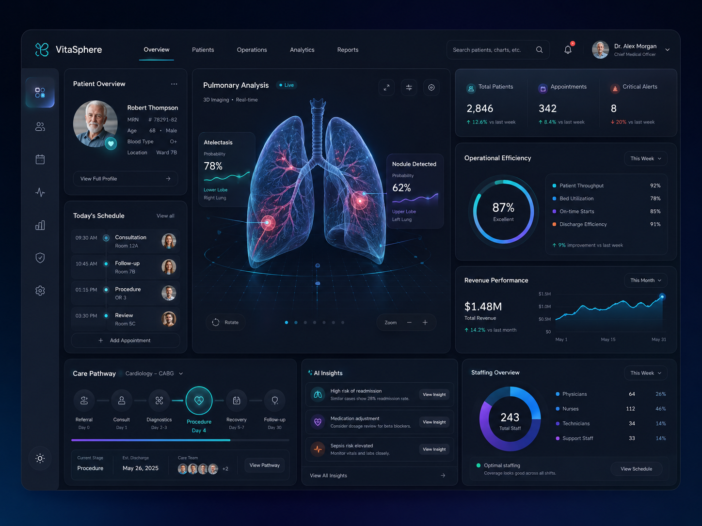
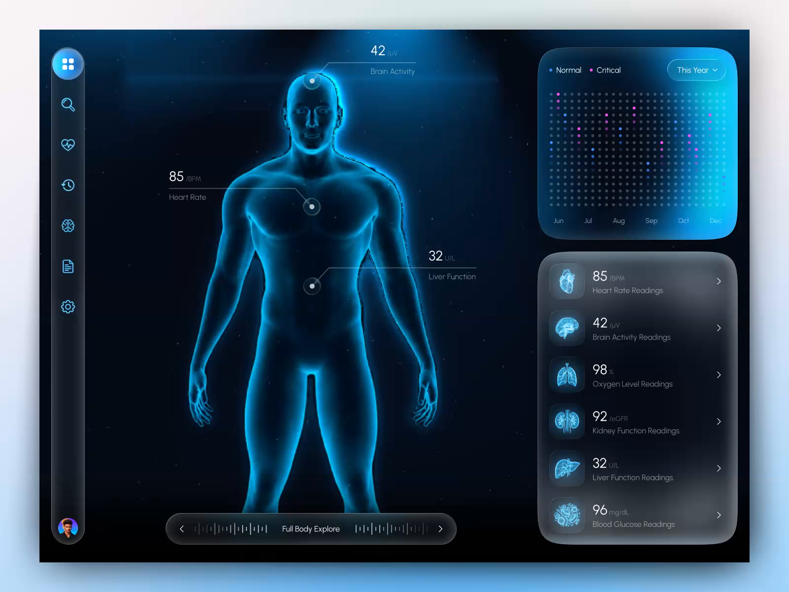
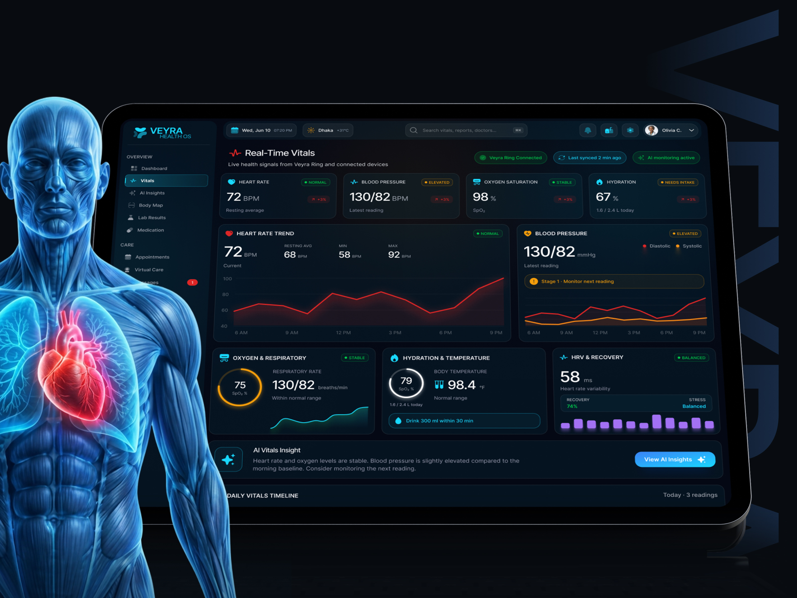
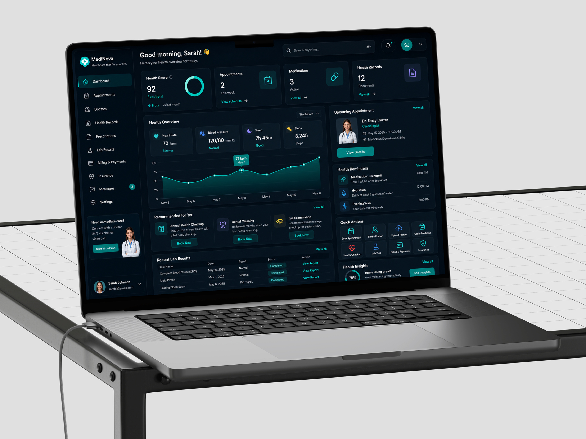
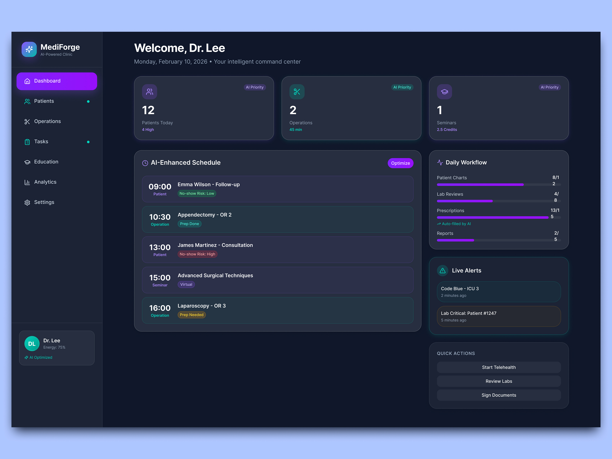
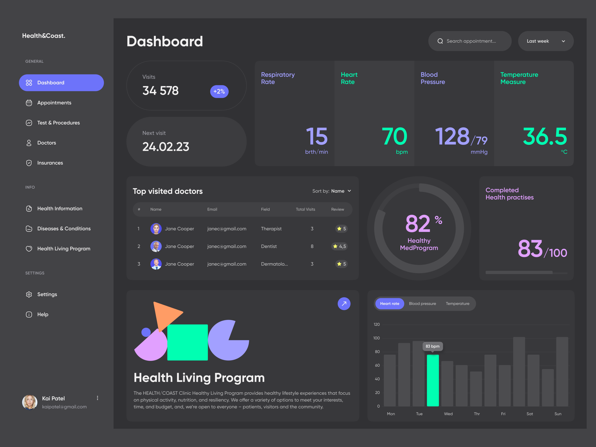
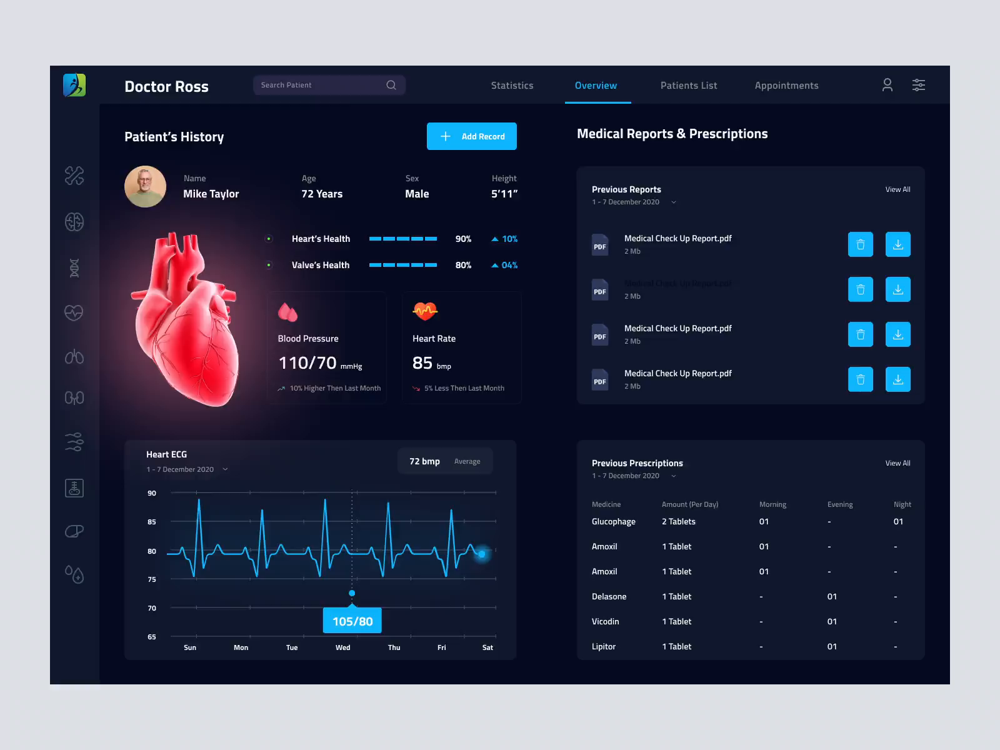
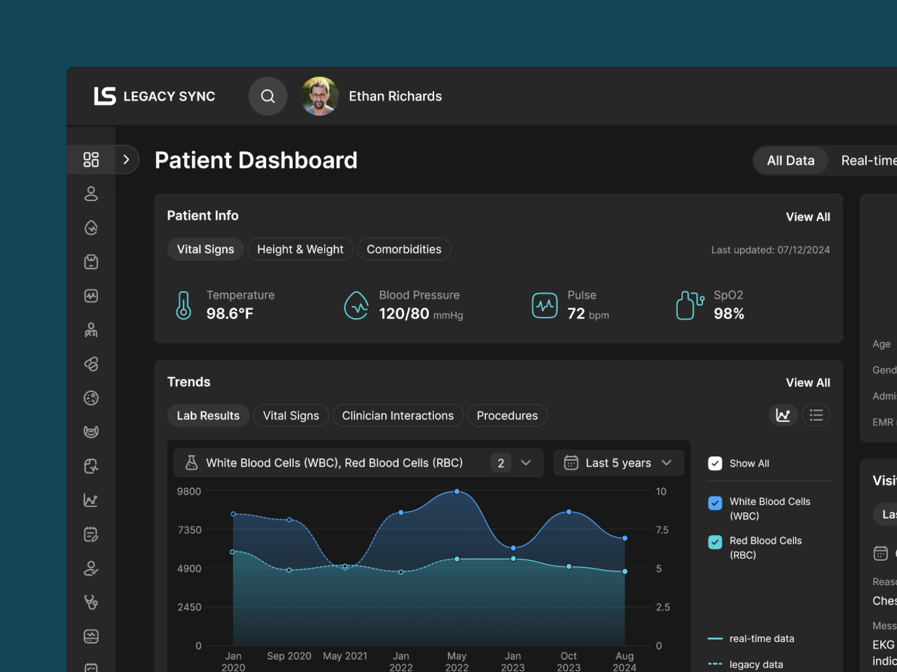
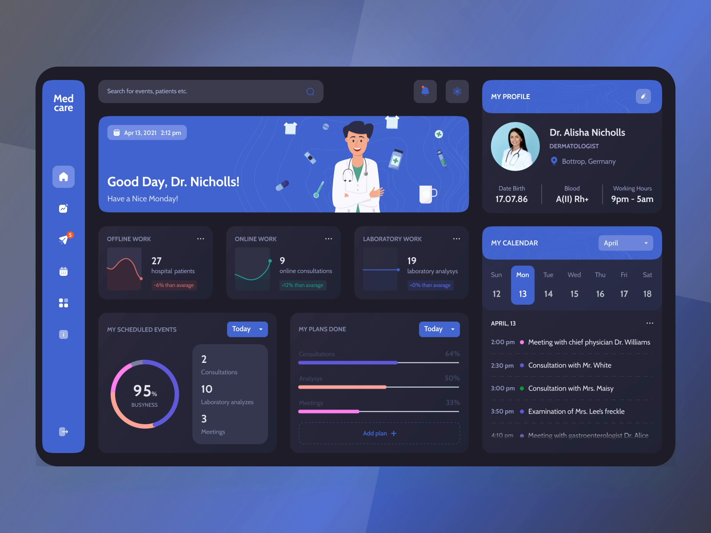
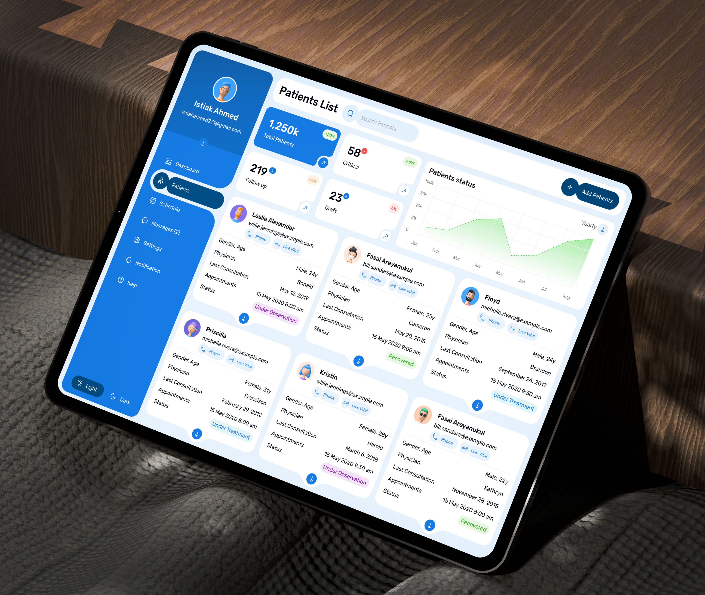

来源：Dribbble「medical dashboard dark / healthcare dashboard」高赞区 + motionsites。每张标注了适合哪一端和我们借什么。⭐=我的推荐顺位。看完回复编号（可多选/混搭），我按你选的方向重做两端。

最接近"涟漪守护指挥中心"的理想形态：深蓝渐变底、居中3D 发光肺叶做主视觉、护理路径时间线、环形效率表、AI Insights 卡。非对称三栏（患者列/主视觉/指标列）打破方盒感。
借：把涟漪池升级为页面正中央的巨型主视觉；左右非对称三栏；护理路径时间线用于"守护计划"展示；概率浮窗用于节点标注。

全息发光人体 + 器官标注引线（心率/脑活动/肝功能）+ 点阵日历 + 玻璃拟态器官列表。科技感最强的一张。
借：把涟漪池的"平面五环"升级为全息人体五环图——涟漪节点直接标注在人体对应部位/器官上（用药安全→心脏，低血糖节律→全天时间轴），配引线浮窗。

体征卡带状态胶囊（NORMAL/ELEVATED）、红色趋势图、设备连接徽章、底部 AI Vitals Insight 洞察条——"AI 主动说话"的样子。
借：大屏所有数据卡加状态胶囊（正常/偏高/需关注）；底部加一条"AI 洞察条"轮播智能体的主动判断（与 PROACTIVE_MDT_SUGGEST 联动）。

健康分环（92 Excellent）+ 生命体征四宫格 + 健康提醒时间线 + 快捷动作九宫格——患者端最完整成熟的一张。
借：患者端首页改造成"健康分 + 今日提醒时间线（用药/喝水/散步=我们的时间学触达）+ 快捷动作（文字回执/语音/家属圈）"。

"AI Priority"标签、爽失风险徽章、AI-Enhanced Schedule 优化按钮、医生能量条——把"AI 帮你算过了"做成显性 UI 元素。
借：大屏给每条守护计划加"AI 优先级/爽失风险"标签体系；紫色作为 AI 专属强调色。

深灰底 + 糖果色巨型数字（紫/绿）+ 胶囊形统计卡 + 抽象几何插画——最有"设计感"和年轻人气质的一张。
借：患者端若想摆脱"老年人产品"印象，用它的胶囊统计卡+巨型彩数+几何插画。

3D 心脏渲染 + 心电波形图 + 分段健康进度条 + 报告下载列表。
借：患者端"涟漪曲线"改成 ECG 心电风格波形 + 3D 器官点缀；复查触达用"分段进度条"。

真实临床数据感、深青单色系、双数据源对比图（real-time vs legacy）——最"严肃医疗"的一张。
借：如果嫌鎏金太亮，可以走这个"冷静临床"路线：单色深青+克制的白线。

"Good Day, Dr." 问候横幅 + 右栏个人档案/日历——亲切感强。
借：患者端首页加"问候横幅 + 今日日程日历"组合。

亮色蓝系、患者状态胶囊（Under Observation/Recovered）、平板优先布局。
借：患者列表的状态胶囊与亮色卡片（若患者端保持浅色）。
· Arobox 暗金仪表盘（Dribbble 21.4k 赞，上轮已借鉴其渐变描边/悬浮物理/金属数字）——截图在 docs-assets/design-references/bonus-Dribbble暗金网格.png
· motionsites 系列：F1 Racing Hub（数字分级）、Bio-Age（金色 DNA 健康数据）、Sentinel（纯黑克制）、Stillmind（静科技）——你浏览器里就有标签页可直接翻。
👉 怎么选：直接回复编号（例："1+2 混搭，患者端用 4"），或说"都按你推荐的来"。我会按选择对大屏/患者端做一轮完整的视觉重构。